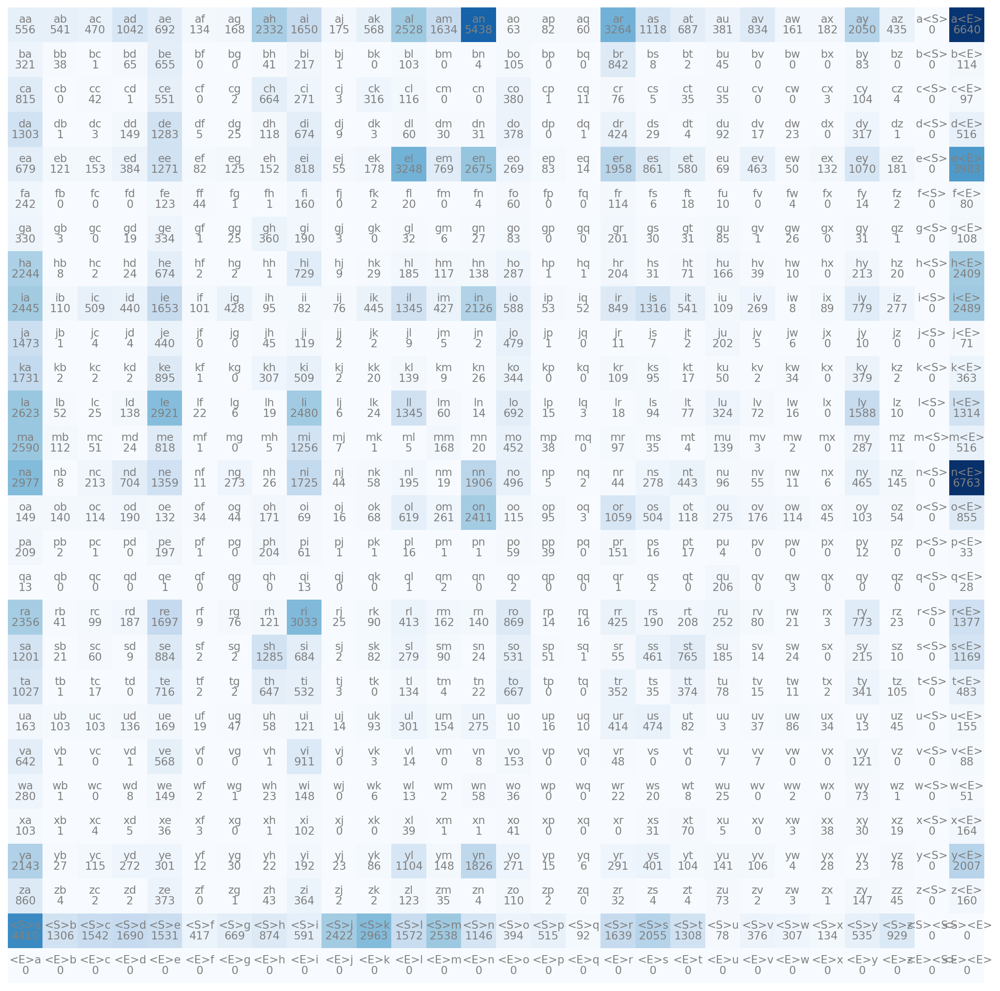
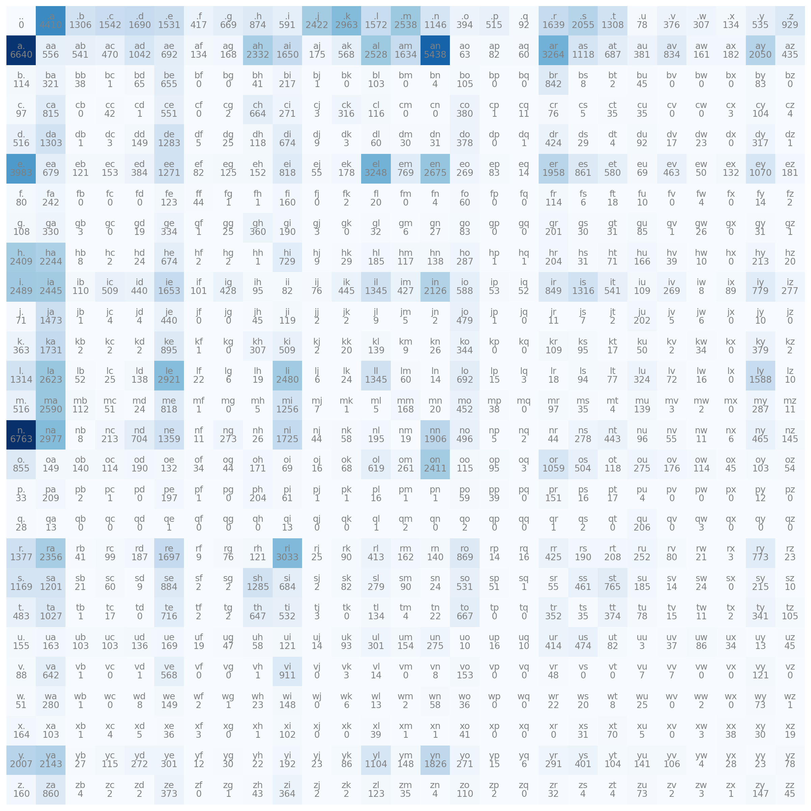

Show the code
['emma', 'olivia', 'ava', 'isabella', 'sophia', 'charlotte', 'mia', 'amelia', 'harper', 'evelyn']
32033This is my study notes / codes along with Andrej Karpathy’s “Neural Networks: Zero to Hero” series.
makemoretakes one text file as input, where each line is assumed to be one training thing, and generates more things like it. Under the hood, it is an autoregressive character-level language model, with a wide choice of models from bigrams all the way to a Transformer (exactly as seen in GPT).
['emma', 'olivia', 'ava', 'isabella', 'sophia', 'charlotte', 'mia', 'amelia', 'harper', 'evelyn']
32033No of chars for the shortest word: 2
No of chars for the longest word: 15By looking into (1) the order of characters in individual word, and (2) that pattern for the whole dataset of 32k words, we will try to infer which character is likely to follow a character or chain of characters.
We will first building a bigrams languague model - which only works will 2 characters at a time - look at the current character and try to predict the next one. We are just following this local structure!
It’s just a simple (and weak) model but a good way to start.
bigrams in the datasetbigrams in a python dictionaryIn order to learn statistics about what character is more likely to follow another character, the simplest way is counting.
[(('a', '<E>'), 5),
(('i', 'a'), 2),
(('<S>', 'e'), 1),
(('e', 'm'), 1),
(('m', 'm'), 1),
(('m', 'a'), 1),
(('<S>', 'o'), 1),
(('o', 'l'), 1),
(('l', 'i'), 1),
(('i', 'v'), 1),
(('v', 'i'), 1),
(('<S>', 'a'), 1),
(('a', 'v'), 1),
(('v', 'a'), 1),
(('<S>', 'i'), 1),
(('i', 's'), 1),
(('s', 'a'), 1),
(('a', 'b'), 1),
(('b', 'e'), 1),
(('e', 'l'), 1),
(('l', 'l'), 1),
(('l', 'a'), 1),
(('<S>', 's'), 1),
(('s', 'o'), 1),
(('o', 'p'), 1),
(('p', 'h'), 1),
(('h', 'i'), 1)]bigrams in a 2D torch tensor (“training the model”)Instead of using Python dictionary, we will use torch 2D array to store this information.
tensor([[0, 0, 0, 0, 0],
[0, 0, 0, 0, 0],
[0, 0, 0, 0, 0]], dtype=torch.int32)How can we access/assign a value in torch array:
tensor([[ 0, 0, 0, 0, 0],
[10, 10, 10, 10, 10],
[10, 10, 10, 10, 10]], dtype=torch.int32)Now the english alphabet contain 26 characters, we will need to capture the <S> and <E> also. So it would be 28 x 28 array.
This will collect all the characters used in our dataset (join all words to a massive string and pass it to a set(), which will remove duplicate). With such a large dataset, all the english characters were used.
{'a': 0,
'b': 1,
'c': 2,
'd': 3,
'e': 4,
'f': 5,
'g': 6,
'h': 7,
'i': 8,
'j': 9,
'k': 10,
'l': 11,
'm': 12,
'n': 13,
'o': 14,
'p': 15,
'q': 16,
'r': 17,
's': 18,
't': 19,
'u': 20,
'v': 21,
'w': 22,
'x': 23,
'y': 24,
'z': 25,
'<S>': 26,
'<E>': 27}bigram tensorimport matplotlib.pyplot as plt
%matplotlib inline
plt.figure(figsize=(16,16))
plt.imshow(N, cmap='Blues')
for i in range(28):
for j in range(28):
# plot character strings with number of time
chstr = itos[i] + itos[j]
plt.text(j, i, chstr, ha="center", va="bottom", color="gray")
plt.text(j, i, N[i, j].item(), ha="center", va="top", color="gray")
plt.axis('off')
. token<S>, and <E> look a bit annoying. let’s replace them by simple ..
import matplotlib.pyplot as plt
%matplotlib inline
plt.figure(figsize=(16,16))
plt.imshow(N, cmap='Blues')
for i in range(27):
for j in range(27):
chstr = itos[i] + itos[j]
plt.text(j, i, chstr, ha="center", va="bottom", color='gray')
plt.text(j, i, N[i, j].item(), ha="center", va="top", color='gray')
plt.axis('off')
Taking the first column of the array.
tensor([ 0, 4410, 1306, 1542, 1690, 1531, 417, 669, 874, 591, 2422, 2963,
1572, 2538, 1146, 394, 515, 92, 1639, 2055, 1308, 78, 376, 307,
134, 535, 929], dtype=torch.int32)Column-wise probability.
tensor([0.0000, 0.1377, 0.0408, 0.0481, 0.0528, 0.0478, 0.0130, 0.0209, 0.0273,
0.0184, 0.0756, 0.0925, 0.0491, 0.0792, 0.0358, 0.0123, 0.0161, 0.0029,
0.0512, 0.0642, 0.0408, 0.0024, 0.0117, 0.0096, 0.0042, 0.0167, 0.0290])Creating random number with Pytorch generator at a state.
tensor([1, 1, 2, 0, 0, 2, 1, 1, 0, 0, 0, 1, 1, 0, 0, 1, 1, 0, 0, 1, 0, 2, 0, 0,
1, 0, 0, 1, 0, 0, 0, 1, 1, 1, 0, 1, 1, 0, 0, 1, 1, 1, 0, 1, 1, 0, 1, 1,
0, 2, 0, 0, 0, 0, 0, 0, 0, 0, 0, 0, 1, 1, 0, 0, 0, 0, 0, 0, 0, 0, 1, 0,
0, 1, 0, 0, 0, 0, 0, 0, 0, 1, 2, 0, 0, 0, 0, 0, 0, 1, 0, 0, 2, 0, 1, 0,
0, 1, 1, 1])Now back to our data, generate a tensor with 1 value from the p vector.
'j'Let’s automate it:
j
u
n
i
d
e
.And more, joining the last result to single word, and make new 10 names:
g = torch.Generator().manual_seed(2147483647)
for i in range(10):
out = []
ix = 0
while True:
p = N[ix].float()
p = p / p.sum()
# p = torch.ones(27) / 27.0
# the result look terrible, but compare to an un-trained model for eg p - uncomment to code above, they are still like names.
ix = torch.multinomial(p, num_samples=1, replacement=True, generator=g).item()
out.append(itos[ix])
if ix == 0:
break
print(''.join(out))junide.
janasah.
p.
cony.
a.
nn.
kohin.
tolian.
juee.
ksahnaauranilevias.We just fetching a row of N from the counts matrix, and then always do the same things: converting to float, dividing. That’s not efficient! We now will optimize this:
P = N.float()
# param 1 helps summing horizontally, by rows
# keepdim keeps the dimension the output is still 2D array with 1 column for each row, not a vertical vector entirely
# tensor already support to broadcast the row sum allowing this dividing (keepdim helped not to mess the broadcast)
P /= P.sum(1, keepdim=True)
# inplace operator instead of P = P / P.sum(1, keepdim=True), take care of memory!junide.
janasah.
p.
cony.
a.
nn.
kohin.
tolian.
juee.
ksahnaauranilevias.We’ve just trained and sampled from the model, iteratively sampled the next character and fed it in each time and got the next one. Now we need to somehow measure the quality of the model.
How good is it in predicting? Gimme a number!
# showing bigram for the first 3 words, along with the probability inferred by our model (`P`)
# the higher the prob, the better of prediction
# since a fair (under no data) probability of occuring a character is roughly 1/27 ~ 4%, any prob higher than 4% should be good
# we need to combine all the prob to a single 1 number, measuring how good is our model?
# since multiplying all the prob resulting a very very small number, we will approach by the log likelihood function
# the log likelihood is just the sum of log of individual multiplier
log_likelihood = 0.0
for w in words[:3]:
chs = ['.'] + list(w) + ['.']
for ch1, ch2 in zip(chs, chs[1:]):
ix1 = stoi[ch1]
ix2 = stoi[ch2]
prob = P[ix1, ix2]
log_prob = torch.log(prob)
log_likelihood += log_prob
print(f'{ch1}{ch2}: {prob:.4f} {log_prob:.4f}')
print(f'{log_likelihood=}') # print both the variable name and its value, for the first 3 words.e: 0.0478 -3.0408
em: 0.0377 -3.2793
mm: 0.0253 -3.6772
ma: 0.3899 -0.9418
a.: 0.1960 -1.6299
.o: 0.0123 -4.3982
ol: 0.0780 -2.5508
li: 0.1777 -1.7278
iv: 0.0152 -4.1867
vi: 0.3541 -1.0383
ia: 0.1381 -1.9796
a.: 0.1960 -1.6299
.a: 0.1377 -1.9829
av: 0.0246 -3.7045
va: 0.2495 -1.3882
a.: 0.1960 -1.6299
log_likelihood=tensor(-38.7856)If all the probs equal to 1, the logs will be 0. If they close to 0, the logs will be more negative. We want to use this as a loss function, meaning lower the better, so we will invert it:
neg_log_likelihood=tensor(559891.7500)
2.454094171524048Finally we insert a count and calculate the “normalized” (or average) negative log likelihood. The lower of this number, the better model we have.
You can test with your name:
neg_log_likelihood = 0.0
n = 0
for w in ['tuan']:
chs = ['.'] + list(w) + ['.']
for ch1, ch2 in zip(chs, chs[1:]):
ix1 = stoi[ch1]
ix2 = stoi[ch2]
prob = P[ix1, ix2]
log_prob = torch.log(prob)
neg_log_likelihood += -log_prob
n += 1
print(f'{ch1}{ch2}: {prob:.4f} {log_prob:.4f}')
print(f'{neg_log_likelihood=}')
print(f'{neg_log_likelihood/n}').t: 0.0408 -3.1983
tu: 0.0140 -4.2684
ua: 0.0520 -2.9566
an: 0.1605 -1.8296
n.: 0.3690 -0.9969
neg_log_likelihood=tensor(13.2498)
2.649962902069092tu is not common in our dataset.
For a pair of bigram that does not exist in the dataset, for eg jq, the prob will be zero and log likelihood will be infinity. We can kind of smooth our model by adding constant “fake counts” to the model:
1 is decent number, the more you added, you’ll have a more uniformed distribution, the less, the more peaked distribution you have.
Now we will try to cast the problem of bigram character level of language modeling into the neural network framework. We first understand how to feed it in with 1 point dataset - only the first word emma:
bigram dataset for the neural net# creating training set of bigram(x, y)
xs, ys = [], []
for w in words[:1]:
chs = ['.'] + list(w) + ['.']
for ch1, ch2 in zip(chs, chs[1:]):
ix1 = stoi[ch1]
ix2 = stoi[ch2]
xs.append(ix1)
ys.append(ix2)
xs = torch.tensor(xs) # both .tensor() and .Tensor() work!
ys = torch.tensor(ys)
# https://stackoverflow.com/questions/51911749/what-is-the-difference-between-torch-tensor-and-torch-tensor
# .tensor() infers dtype as int64 while .Tensor() infers dtype as float32, in this caseThe input and output tensor for the first word will be look like this:
tensor([[1., 0., 0., 0., 0., 0., 0., 0., 0., 0., 0., 0., 0., 0., 0., 0., 0., 0.,
0., 0., 0., 0., 0., 0., 0., 0., 0.],
[0., 0., 0., 0., 0., 1., 0., 0., 0., 0., 0., 0., 0., 0., 0., 0., 0., 0.,
0., 0., 0., 0., 0., 0., 0., 0., 0.],
[0., 0., 0., 0., 0., 0., 0., 0., 0., 0., 0., 0., 0., 1., 0., 0., 0., 0.,
0., 0., 0., 0., 0., 0., 0., 0., 0.],
[0., 0., 0., 0., 0., 0., 0., 0., 0., 0., 0., 0., 0., 1., 0., 0., 0., 0.,
0., 0., 0., 0., 0., 0., 0., 0., 0.],
[0., 1., 0., 0., 0., 0., 0., 0., 0., 0., 0., 0., 0., 0., 0., 0., 0., 0.,
0., 0., 0., 0., 0., 0., 0., 0., 0.]])tensor([[ 0.2084],
[-0.1912],
[-0.7102],
[-0.7102],
[ 0.5453]])This is 1 neuron only, now we want to evaluate all 27 characters using only 5 inputs from the first word, we’ll make 27 neurons:
tensor([[ 1.1742, -0.1228, 0.3312, -1.7074, -0.5036, 0.5717, 0.5462, 1.2425,
2.2197, 0.9381, -0.4647, -1.1784, -0.0046, 1.5661, 0.1240, -0.1818,
-0.1129, 1.1559, -0.2303, -0.2885, -0.8589, -0.6829, 0.6188, 0.6673,
-0.6109, 1.9768, 0.2832],
[-1.3979, -1.4019, -3.2251, -0.6767, 0.3323, 0.2407, 0.5753, -0.2401,
1.0848, 0.1452, 0.1295, 0.4613, 2.3659, 1.4620, 0.3717, -1.1485,
-0.5063, -0.4455, -0.2564, -0.6005, 1.9493, -0.3160, 0.7859, -1.0101,
0.3456, 0.9161, 0.5722],
[-1.2995, -0.2011, 0.0972, 0.1959, 0.5090, 0.0080, -0.8293, -0.9525,
-1.0965, 0.6003, 0.7801, -1.1612, -0.4070, 2.1902, -0.0264, 0.9155,
1.4465, -0.3992, 0.0044, 0.0918, 2.1084, 0.7271, -0.5992, -0.1443,
0.1657, -0.0258, -0.4744],
[-1.2995, -0.2011, 0.0972, 0.1959, 0.5090, 0.0080, -0.8293, -0.9525,
-1.0965, 0.6003, 0.7801, -1.1612, -0.4070, 2.1902, -0.0264, 0.9155,
1.4465, -0.3992, 0.0044, 0.0918, 2.1084, 0.7271, -0.5992, -0.1443,
0.1657, -0.0258, -0.4744],
[ 0.4732, 0.0148, -0.4303, -0.3870, -2.1335, -1.9046, -0.8460, 1.0632,
-0.7406, 1.9063, -0.7375, 0.8191, -1.1415, 0.1678, -0.1831, 0.5425,
-1.5502, -0.3083, 0.4649, -0.8271, 0.8959, 0.6717, 1.1916, 2.1147,
0.3208, -1.3000, -1.0078]])So far we have fed 5 inputs to 27 neurons for 27 characters in the first layer of the neural net. We notice that the output number ranges from negative to positive while we want “how likely of the next characters”. It would be counts, or probs, hence we exponentiate the logits, then dividing row-wise total to get the prob of each character.
This is call the softmax!
tensor([[0.0609, 0.0166, 0.0262, 0.0034, 0.0114, 0.0333, 0.0325, 0.0652, 0.1732,
0.0481, 0.0118, 0.0058, 0.0187, 0.0901, 0.0213, 0.0157, 0.0168, 0.0598,
0.0149, 0.0141, 0.0080, 0.0095, 0.0349, 0.0367, 0.0102, 0.1359, 0.0250],
[0.0051, 0.0051, 0.0008, 0.0105, 0.0288, 0.0263, 0.0367, 0.0162, 0.0611,
0.0239, 0.0235, 0.0328, 0.2201, 0.0891, 0.0300, 0.0066, 0.0125, 0.0132,
0.0160, 0.0113, 0.1451, 0.0151, 0.0453, 0.0075, 0.0292, 0.0516, 0.0366],
[0.0059, 0.0177, 0.0239, 0.0264, 0.0361, 0.0218, 0.0095, 0.0084, 0.0072,
0.0395, 0.0473, 0.0068, 0.0144, 0.1937, 0.0211, 0.0541, 0.0921, 0.0145,
0.0218, 0.0238, 0.1785, 0.0448, 0.0119, 0.0188, 0.0256, 0.0211, 0.0135],
[0.0059, 0.0177, 0.0239, 0.0264, 0.0361, 0.0218, 0.0095, 0.0084, 0.0072,
0.0395, 0.0473, 0.0068, 0.0144, 0.1937, 0.0211, 0.0541, 0.0921, 0.0145,
0.0218, 0.0238, 0.1785, 0.0448, 0.0119, 0.0188, 0.0256, 0.0211, 0.0135],
[0.0377, 0.0239, 0.0153, 0.0160, 0.0028, 0.0035, 0.0101, 0.0681, 0.0112,
0.1582, 0.0112, 0.0533, 0.0075, 0.0278, 0.0196, 0.0405, 0.0050, 0.0173,
0.0374, 0.0103, 0.0576, 0.0460, 0.0774, 0.1949, 0.0324, 0.0064, 0.0086]])micrograd# randomly initialize 27 neurons' weights. each neuron receives 27 inputs
g = torch.Generator().manual_seed(2147483647) # to make sure we all have same random
W = torch.randn((27, 27), generator=g)
xenc = F.one_hot(xs, num_classes=27).float() # input to the network: one-hot encoding
logits = xenc @ W # predict log-counts
counts = logits.exp() # counts, equivalent to N
probs = counts / counts.sum(1, keepdims=True) # probabilities for next character
# btw: the last 2 lines here are together called a 'softmax'Below is detail explaination for each example from our 5-datapoint dataset.
nlls = torch.zeros(5)
for i in range(5):
# i-th bigram:
x = xs[i].item() # input character index
y = ys[i].item() # label character index
print('--------')
print(f'bigram example {i+1}: {itos[x]}{itos[y]} (indexes {x},{y})')
print('input to the neural net:', x)
print('output probabilities from the neural net:', probs[i])
print('label (actual next character):', y)
p = probs[i, y]
print('probability assigned by the net to the the correct character:', p.item())
logp = torch.log(p)
print('log likelihood:', logp.item())
nll = -logp
print('negative log likelihood:', nll.item())
nlls[i] = nll
print('=========')
print('average negative log likelihood, i.e. loss =', nlls.mean().item())--------
bigram example 1: .e (indexes 0,5)
input to the neural net: 0
output probabilities from the neural net: tensor([0.0609, 0.0166, 0.0262, 0.0034, 0.0114, 0.0333, 0.0325, 0.0652, 0.1732,
0.0481, 0.0118, 0.0058, 0.0187, 0.0901, 0.0213, 0.0157, 0.0168, 0.0598,
0.0149, 0.0141, 0.0080, 0.0095, 0.0349, 0.0367, 0.0102, 0.1359, 0.0250])
label (actual next character): 5
probability assigned by the net to the the correct character: 0.03332865983247757
log likelihood: -3.4013376235961914
negative log likelihood: 3.4013376235961914
--------
bigram example 2: em (indexes 5,13)
input to the neural net: 5
output probabilities from the neural net: tensor([0.0051, 0.0051, 0.0008, 0.0105, 0.0288, 0.0263, 0.0367, 0.0162, 0.0611,
0.0239, 0.0235, 0.0328, 0.2201, 0.0891, 0.0300, 0.0066, 0.0125, 0.0132,
0.0160, 0.0113, 0.1451, 0.0151, 0.0453, 0.0075, 0.0292, 0.0516, 0.0366])
label (actual next character): 13
probability assigned by the net to the the correct character: 0.08912799507379532
log likelihood: -2.4176816940307617
negative log likelihood: 2.4176816940307617
--------
bigram example 3: mm (indexes 13,13)
input to the neural net: 13
output probabilities from the neural net: tensor([0.0059, 0.0177, 0.0239, 0.0264, 0.0361, 0.0218, 0.0095, 0.0084, 0.0072,
0.0395, 0.0473, 0.0068, 0.0144, 0.1937, 0.0211, 0.0541, 0.0921, 0.0145,
0.0218, 0.0238, 0.1785, 0.0448, 0.0119, 0.0188, 0.0256, 0.0211, 0.0135])
label (actual next character): 13
probability assigned by the net to the the correct character: 0.19367089867591858
log likelihood: -1.6415950059890747
negative log likelihood: 1.6415950059890747
--------
bigram example 4: ma (indexes 13,1)
input to the neural net: 13
output probabilities from the neural net: tensor([0.0059, 0.0177, 0.0239, 0.0264, 0.0361, 0.0218, 0.0095, 0.0084, 0.0072,
0.0395, 0.0473, 0.0068, 0.0144, 0.1937, 0.0211, 0.0541, 0.0921, 0.0145,
0.0218, 0.0238, 0.1785, 0.0448, 0.0119, 0.0188, 0.0256, 0.0211, 0.0135])
label (actual next character): 1
probability assigned by the net to the the correct character: 0.01772291027009487
log likelihood: -4.032896995544434
negative log likelihood: 4.032896995544434
--------
bigram example 5: a. (indexes 1,0)
input to the neural net: 1
output probabilities from the neural net: tensor([0.0377, 0.0239, 0.0153, 0.0160, 0.0028, 0.0035, 0.0101, 0.0681, 0.0112,
0.1582, 0.0112, 0.0533, 0.0075, 0.0278, 0.0196, 0.0405, 0.0050, 0.0173,
0.0374, 0.0103, 0.0576, 0.0460, 0.0774, 0.1949, 0.0324, 0.0064, 0.0086])
label (actual next character): 0
probability assigned by the net to the the correct character: 0.0377422496676445
log likelihood: -3.276975154876709
negative log likelihood: 3.276975154876709
=========
average negative log likelihood, i.e. loss = 2.954097270965576# create the dataset
xs, ys = [], []
for w in words:
chs = ['.'] + list(w) + ['.']
for ch1, ch2 in zip(chs, chs[1:]):
ix1 = stoi[ch1]
ix2 = stoi[ch2]
xs.append(ix1)
ys.append(ix2)
xs = torch.tensor(xs)
ys = torch.tensor(ys)
num = xs.nelement()
print('number of examples: ', num)
# initialize the 'network'
g = torch.Generator().manual_seed(2147483647)
W = torch.randn((27, 27), generator=g, requires_grad=True)number of examples: 228146# gradient descent
for k in range(1): # after run 100 times, shorten the notebook
# forward pass
xenc = F.one_hot(xs, num_classes=27).float() # input to the network: one-hot encoding
logits = xenc @ W # predict log-counts
counts = logits.exp() # counts, equivalent to N
probs = counts / counts.sum(1, keepdims=True) # probabilities for next character
loss = -probs[torch.arange(num), ys].log().mean() + 0.01*(W**2).mean() # regularization loss
print(loss.item())
# backward pass
W.grad = None # set to zero the gradient
loss.backward()
# update
W.data += -50 * W.grad3.768618583679199Looking back to the backprogation in the lesson 1, everything look similar here:
| Part | This neural nets for bigram language modeling | Neural nets introduced in the lesson 1 |
|---|---|---|
| Forward pass | probs , use negative log likelihood as loss function, doing classification |
ypred , use MSE for loss function, doing regression |
| Backward pass | Same, offered by Torch. | Set grad of params to be zeros and do backpropagation. |
| Update loss | Same | Update the parameters, change the parameters following opposite direction to reduce the loss. |
Look at the below code, xenc @ W is (5, 27) @ (27, 27) that will result (5, 27) matrix. Each ix row of that 5-rows result matrix should be the selection of corresponding character rows in the W.
So in this gradient-based framework, we start with a random array of parameters. By optimizing the loss function we will get the same result with the bigram approach (W and N are almost the same, it’s log count here why is count in bigram). That’s why we obtained the same loss!
The neural networks offer more flexibility!
Same with smoothing technique when we’ve doing the bigram model, gradient-based framework have an equivalent way for smoothing. We will try to incentivize W to be near zero. We augment to loss function by adding this: 0.01*(W**2).mean().
# finally, sample from the 'neural net' model
g = torch.Generator().manual_seed(2147483647)
for i in range(5):
out = []
ix = 0
while True:
# ----------
# BEFORE:
# p = P[ix]
# ----------
# NOW:
xenc = F.one_hot(torch.tensor([ix]), num_classes=27).float()
logits = xenc @ W # predict log-counts
counts = logits.exp() # counts, equivalent to N
p = counts / counts.sum(1, keepdims=True) # probabilities for next character
# ----------
ix = torch.multinomial(p, num_samples=1, replacement=True, generator=g).item()
out.append(itos[ix])
if ix == 0:
break
print(''.join(out))juwjdjdjancqydjufhqyywecnw.
.
oiin.
toziasz.
twt.What we’ve gone through:
We are on the way out to transformer!
Thank you, Andrej!
makemore Github repo: https://github.com/karpathy/makemore---
title: "NN-Z2H Lesson 2: The spelled-out intro to language modeling - building makemore"
description: "implement a bigram character-level language model, focus on (1) introducing torch, and (2) the overall framework of language modeling that includes model training, sampling, and the evaluation of a loss"
author:
- name: "Tuan Le Khac"
url: https://lktuan.github.io/
categories: [til, python, andrej karpathy, nn-z2h, bigram, neural networks]
date: 11-15-2024
date-modified: 11-18-2024
image: andrej_new.jpg
draft: false
css: html/styles.scss
fig-cap-location: bottom
editor: visual
format:
html:
code-overflow: wrap
code-tools: true
code-fold: show
code-annotations: hover
---
::: {.callout-important title="This is not orginal content!"}
This is my study notes / codes along with Andrej Karpathy's "[Neural Networks: Zero to Hero](https://www.youtube.com/watch?v=VMj-3S1tku0&list=PLAqhIrjkxbuWI23v9cThsA9GvCAUhRvKZ)" series.
:::
# PART 1: intro
> `makemore` takes one text file as input, where each line is assumed to be one training thing, and generates more things like it. Under the hood, it is an autoregressive character-level language model, with a wide choice of models from bigrams all the way to a Transformer (exactly as seen in GPT).
## reading and exploring the dataset
```{python}
import pandas as pd
url = "https://raw.githubusercontent.com/karpathy/makemore/refs/heads/master/names.txt"
words = pd.read_csv(url, header=None).iloc[:, 0].tolist()
print(words[:10])
print(len(words))
```
```{python}
print("No of chars for the shortest word: ", min(len(w) for w in words))
print("No of chars for the longest word: ", max(len(w) for w in words))
```
By looking into (1) the order of characters in individual word, and (2) that pattern for the whole dataset of 32k words, we will try to infer which character is likely to follow a character or chain of characters.
We will first building a `bigrams` languague model - which only works will 2 characters at a time - look at the current character and try to predict the next one. We are just following this local structure!
It's just a simple (and weak) model but a good way to start.
## exploring the `bigrams` in the dataset
```{python}
for w in words[:3]:
chs = ['<S>'] + list(w) + ['<E>'] # special start and ending token, `list()` will turn all character in word to list
for ch1, ch2 in zip(chs, chs[1:]):
print(ch1, ch2)
```
## counting `bigrams` in a python dictionary
In order to learn statistics about what character is more likely to follow another character, the simplest way is `counting`.
```{python}
b = {} # dict to store all pair of character
for w in words[:5]: # do it for first five words
chs = ['<S>'] + list(w) + ['<E>']
for ch1, ch2 in zip(chs, chs[1:]):
bigram = (ch1, ch2)
b[bigram] = b.get(bigram, 0) + 1
# print(ch1, ch2)
```
```{python}
sorted(b.items(), key = lambda kv: -kv[1])
```
## counting `bigrams` in a 2D `torch` tensor ("training the model")
Instead of using Python dictionary, we will use `torch` 2D array to store this information.
```{python}
import torch
```
```{python}
a = torch.zeros((3,5), dtype=torch.int32)
a
```
How can we access/assign a value in torch array:
```{python}
a[1:3] = 10
a
```
Now the english alphabet contain 26 characters, we will need to capture the `<S>` and `<E>` also. So it would be 28 x 28 array.
```{python}
N = torch.zeros((28,28), dtype=torch.int32)
```
This will collect all the characters used in our dataset (join all words to a massive string and pass it to a `set()`, which will remove duplicate). With such a large dataset, all the english characters were used.
```{python}
chars = sorted(list(set(''.join(words))))
len(chars) # 26
# with index
stoi = {s:i for i,s in enumerate(chars)}
stoi['<S>'] = 26
stoi['<E>'] = 27
stoi
```
```{python}
for w in words:
chs = ['<S>'] + list(w) + ['<E>']
for ch1, ch2 in zip(chs, chs[1:]):
ix1 = stoi[ch1]
ix2 = stoi[ch2]
N[ix1, ix2] += 1
```
## visualizing the `bigram` tensor
```{python}
itos = {i:s for s, i in stoi.items()}
```
```{python}
import matplotlib.pyplot as plt
%matplotlib inline
plt.figure(figsize=(16,16))
plt.imshow(N, cmap='Blues')
for i in range(28):
for j in range(28):
# plot character strings with number of time
chstr = itos[i] + itos[j]
plt.text(j, i, chstr, ha="center", va="bottom", color="gray")
plt.text(j, i, N[i, j].item(), ha="center", va="top", color="gray")
plt.axis('off')
```
## deleting spurious (S) and (E) tokens in favor of a single `.` token
`<S>`, and `<E>` look a bit annoying. let's replace them by simple `.`.
```{python}
N = torch.zeros((27,27), dtype=torch.int32)
stoi = {s:i+1 for i,s in enumerate(chars)}
stoi['.'] = 0
itos = {i:s for s, i in stoi.items()}
for w in words:
chs = ['.'] + list(w) + ['.']
for ch1, ch2 in zip(chs, chs[1:]):
ix1 = stoi[ch1]
ix2 = stoi[ch2]
N[ix1, ix2] += 1
```
```{python}
import matplotlib.pyplot as plt
%matplotlib inline
plt.figure(figsize=(16,16))
plt.imshow(N, cmap='Blues')
for i in range(27):
for j in range(27):
chstr = itos[i] + itos[j]
plt.text(j, i, chstr, ha="center", va="bottom", color='gray')
plt.text(j, i, N[i, j].item(), ha="center", va="top", color='gray')
plt.axis('off')
```
## sampling from the model
Taking the first column of the array.
```{python}
N[0]
```
Column-wise probability.
```{python}
p = N[0].float()
p = p / p.sum()
p
```
Creating random number with Pytorch generator at a state.
```{python}
g = torch.Generator().manual_seed(2147483647)
p_test = torch.rand(3, generator=g)
p_test = p_test / p_test.sum()
```
```{python}
torch.multinomial(p_test, num_samples=100, replacement=True, generator=g)
```
Now back to our data, generate a tensor with 1 value from the `p` vector.
```{python}
g = torch.Generator().manual_seed(2147483647)
ix = torch.multinomial(p, num_samples=1, replacement=True, generator=g).item()
itos[ix]
```
Let's automate it:
```{python}
g = torch.Generator().manual_seed(2147483647)
ix = 0
while True:
p = N[ix].float()
p = p / p.sum()
ix = torch.multinomial(p, num_samples=1, replacement=True, generator=g).item()
print(itos[ix])
if ix == 0:
break
```
And more, joining the last result to single word, and make new 10 names:
```{python}
g = torch.Generator().manual_seed(2147483647)
for i in range(10):
out = []
ix = 0
while True:
p = N[ix].float()
p = p / p.sum()
# p = torch.ones(27) / 27.0
# the result look terrible, but compare to an un-trained model for eg p - uncomment to code above, they are still like names.
ix = torch.multinomial(p, num_samples=1, replacement=True, generator=g).item()
out.append(itos[ix])
if ix == 0:
break
print(''.join(out))
```
## efficiency! vectorized normalization of the rows, tensor broadcasting
We just fetching a row of `N` from the counts matrix, and then always do the same things: converting to float, dividing. That's not efficient! We now will optimize this:
```{python}
P = N.float()
# param 1 helps summing horizontally, by rows
# keepdim keeps the dimension the output is still 2D array with 1 column for each row, not a vertical vector entirely
# tensor already support to broadcast the row sum allowing this dividing (keepdim helped not to mess the broadcast)
P /= P.sum(1, keepdim=True)
# inplace operator instead of P = P / P.sum(1, keepdim=True), take care of memory!
```
```{python}
g = torch.Generator().manual_seed(2147483647)
for i in range(10):
out = []
ix = 0
while True:
p = P[ix]
ix = torch.multinomial(p, num_samples=1, replacement=True, generator=g).item()
out.append(itos[ix])
if ix == 0:
break
print(''.join(out))
```
## loss function (the negative log likelihood of the data under our model)
We've just trained and sampled from the model, iteratively sampled the next character and fed it in each time and got the next one. Now we need to somehow measure the quality of the model.
How good is it in predicting? Gimme a number!
```{python}
# showing bigram for the first 3 words, along with the probability inferred by our model (`P`)
# the higher the prob, the better of prediction
# since a fair (under no data) probability of occuring a character is roughly 1/27 ~ 4%, any prob higher than 4% should be good
# we need to combine all the prob to a single 1 number, measuring how good is our model?
# since multiplying all the prob resulting a very very small number, we will approach by the log likelihood function
# the log likelihood is just the sum of log of individual multiplier
log_likelihood = 0.0
for w in words[:3]:
chs = ['.'] + list(w) + ['.']
for ch1, ch2 in zip(chs, chs[1:]):
ix1 = stoi[ch1]
ix2 = stoi[ch2]
prob = P[ix1, ix2]
log_prob = torch.log(prob)
log_likelihood += log_prob
print(f'{ch1}{ch2}: {prob:.4f} {log_prob:.4f}')
print(f'{log_likelihood=}') # print both the variable name and its value, for the first 3 words
```
If all the probs equal to 1, the logs will be 0. If they close to 0, the logs will be more negative. We want to use this as a loss function, meaning lower the better, so we will invert it:
```{python}
neg_log_likelihood = 0.0
n = 0
for w in words:
chs = ['.'] + list(w) + ['.']
for ch1, ch2 in zip(chs, chs[1:]):
ix1 = stoi[ch1]
ix2 = stoi[ch2]
prob = P[ix1, ix2]
log_prob = torch.log(prob)
neg_log_likelihood += -log_prob
n += 1
print(f'{neg_log_likelihood=}')
print(f'{neg_log_likelihood/n}')
```
Finally we insert a count and calculate the "normalized" (or average) negative log likelihood. The lower of this number, the better model we have.
You can test with your name:
```{python}
neg_log_likelihood = 0.0
n = 0
for w in ['tuan']:
chs = ['.'] + list(w) + ['.']
for ch1, ch2 in zip(chs, chs[1:]):
ix1 = stoi[ch1]
ix2 = stoi[ch2]
prob = P[ix1, ix2]
log_prob = torch.log(prob)
neg_log_likelihood += -log_prob
n += 1
print(f'{ch1}{ch2}: {prob:.4f} {log_prob:.4f}')
print(f'{neg_log_likelihood=}')
print(f'{neg_log_likelihood/n}')
```
`tu` is not common in our dataset.
## model smoothing with fake counts
For a pair of bigram that does not exist in the dataset, for eg `jq`, the prob will be zero and log likelihood will be infinity. We can kind of smooth our model by adding constant "fake counts" to the model:
```{python}
#| eval: false
P = (N+1).float()
```
`1` is decent number, the more you added, you'll have a more uniformed distribution, the less, the more peaked distribution you have.
# PART 2: the neural network approach - intro
Now we will try to cast the problem of bigram character level of language modeling into the **neural network framework**. We first understand how to feed it in with 1 point dataset - only the first word `emma`:
## creating the `bigram` dataset for the neural net
```{python}
# creating training set of bigram(x, y)
xs, ys = [], []
for w in words[:1]:
chs = ['.'] + list(w) + ['.']
for ch1, ch2 in zip(chs, chs[1:]):
ix1 = stoi[ch1]
ix2 = stoi[ch2]
xs.append(ix1)
ys.append(ix2)
xs = torch.tensor(xs) # both .tensor() and .Tensor() work!
ys = torch.tensor(ys)
# https://stackoverflow.com/questions/51911749/what-is-the-difference-between-torch-tensor-and-torch-tensor
# .tensor() infers dtype as int64 while .Tensor() infers dtype as float32, in this case
```
The input and output tensor for the first word will be look like this:
```{md}
> print(ch1,ch2)
. e
e m
m m
m a
a .
> xs
tensor([ 0, 5, 13, 13, 1])
> ys
tensor([ 5, 13, 13, 1, 0])
```
## feeding integers into neural nets? one-hot encodings
```{python}
import torch.nn.functional as F
xenc = F.one_hot(xs, num_classes=27).float() # remember to cast integer to float, which can be fed to neural nets
xenc
```
```{python}
xenc.shape
```
```{python}
plt.imshow(xenc, cmap="Blues")
```
## the "neural net": one linear layer of neurons implemented with matrix multiplication
```{python}
W = torch.randn((27, 1)) # fulfill a tensor with random number followed normal distribution, 1 is indicating 1 single neuron
xenc @ W # @ is matrix mult operator in PyTorch
# (5, 27) @ (27, 1) will result (5, 1) matrix
# no bias is added for now
```
This is 1 neuron only, now we want to evaluate all 27 characters using only 5 inputs from the first word, we'll make 27 neurons:
```{python}
W = torch.randn((27, 27))
xenc @ W
# (5, 27) @ (27, 27) will result (5, 27) matrix
# no bias is added for now
```
## transforming neural net outputs into probabilities: the softmax
So far we have fed 5 inputs to 27 neurons for 27 characters in **the first layer** of the neural net. We notice that the output number ranges from negative to positive while we want "how likely of the next characters". It would be counts, or probs, hence we exponentiate the logits, then dividing row-wise total to get the prob of each character.
This is call the softmax!
```{python}
logits = xenc @ W # log-counts
counts = logits.exp() # equivalent N
probs = counts / counts.sum(1, keepdims=True)
probs
```
## summary, preview to next steps, reference to `micrograd`
```{python}
#| eval: false
# randomly initialize 27 neurons' weights. each neuron receives 27 inputs
g = torch.Generator().manual_seed(2147483647) # to make sure we all have same random
W = torch.randn((27, 27), generator=g)
xenc = F.one_hot(xs, num_classes=27).float() # input to the network: one-hot encoding
logits = xenc @ W # predict log-counts
counts = logits.exp() # counts, equivalent to N
probs = counts / counts.sum(1, keepdims=True) # probabilities for next character
# btw: the last 2 lines here are together called a 'softmax'
```
```{python}
probs.shape
```
Below is detail explaination for each example from our 5-datapoint dataset.
```{python}
nlls = torch.zeros(5)
for i in range(5):
# i-th bigram:
x = xs[i].item() # input character index
y = ys[i].item() # label character index
print('--------')
print(f'bigram example {i+1}: {itos[x]}{itos[y]} (indexes {x},{y})')
print('input to the neural net:', x)
print('output probabilities from the neural net:', probs[i])
print('label (actual next character):', y)
p = probs[i, y]
print('probability assigned by the net to the the correct character:', p.item())
logp = torch.log(p)
print('log likelihood:', logp.item())
nll = -logp
print('negative log likelihood:', nll.item())
nlls[i] = nll
print('=========')
print('average negative log likelihood, i.e. loss =', nlls.mean().item())
```
## vectorized loss
```{python}
loss = - probs[torch.arange(5), ys].log().mean()
loss
```
## backward and update, in PyTorch
```{python}
#| eval: false
# backward pass
W.grad = None # set to zero the gradient
loss.backward()
# this can not yet run for now, PyTorch require the specification of require_grad
```
```{python}
#| eval: false
W.data += -0.1 * W.grad
```
## putting everything together
```{python}
# create the dataset
xs, ys = [], []
for w in words:
chs = ['.'] + list(w) + ['.']
for ch1, ch2 in zip(chs, chs[1:]):
ix1 = stoi[ch1]
ix2 = stoi[ch2]
xs.append(ix1)
ys.append(ix2)
xs = torch.tensor(xs)
ys = torch.tensor(ys)
num = xs.nelement()
print('number of examples: ', num)
# initialize the 'network'
g = torch.Generator().manual_seed(2147483647)
W = torch.randn((27, 27), generator=g, requires_grad=True)
```
```{python}
# gradient descent
for k in range(1): # after run 100 times, shorten the notebook
# forward pass
xenc = F.one_hot(xs, num_classes=27).float() # input to the network: one-hot encoding
logits = xenc @ W # predict log-counts
counts = logits.exp() # counts, equivalent to N
probs = counts / counts.sum(1, keepdims=True) # probabilities for next character
loss = -probs[torch.arange(num), ys].log().mean() + 0.01*(W**2).mean() # regularization loss
print(loss.item())
# backward pass
W.grad = None # set to zero the gradient
loss.backward()
# update
W.data += -50 * W.grad
```
Looking back to the backprogation in the [lesson 1](https://lktuan.github.io/blog/2024-06-17-nn-z2h-p1/#doing-gradient-descent-optimization-manually-training-the-network), everything look similar here:
| Part | This neural nets for bigram language modeling | Neural nets introduced in the lesson 1 |
|------------------|----------------------------|--------------------------|
| Forward pass | `probs` , use negative log likelihood as loss function, doing classification | `ypred` , use MSE for loss function, doing regression |
| Backward pass | Same, offered by Torch. | Set grad of params to be zeros and do backpropagation. |
| Update loss | Same | Update the parameters, change the parameters following opposite direction to reduce the loss. |
## note 1: one-hot encoding really just selects a row of the next Linear layer's weight matrix
Look at the below code, `xenc @ W` is (5, 27) \@ (27, 27) that will result (5, 27) matrix. Each `ix` row of that 5-rows result matrix should be the selection of corresponding character rows in the `W`.
```{python}
#| eval: false
logits = xenc @ W # predict log-counts
counts = logits.exp() # counts, equivalent to N
probs = counts / counts.sum(1, keepdims=True) # probabilities for next character
```
So in this gradient-based framework, we start with a random array of parameters. By optimizing the loss function we will get the same result with the bigram approach (`W` and `N` are almost the same, it's log count here why is count in bigram). That's why we obtained the same loss!
The neural networks offer more flexibility!
## note 2: model smoothing as regularization loss
Same with smoothing technique when we've doing the bigram model, gradient-based framework have an equivalent way for smoothing. We will try to incentivize `W` to be near zero. We augment to loss function by adding this: `0.01*(W**2).mean()`.
```{python}
#| eval: false
loss = -probs[torch.arange(num), ys].log().mean() + 0.01*(W**2).mean()
```
## sampling from the neural net
```{python}
# finally, sample from the 'neural net' model
g = torch.Generator().manual_seed(2147483647)
for i in range(5):
out = []
ix = 0
while True:
# ----------
# BEFORE:
# p = P[ix]
# ----------
# NOW:
xenc = F.one_hot(torch.tensor([ix]), num_classes=27).float()
logits = xenc @ W # predict log-counts
counts = logits.exp() # counts, equivalent to N
p = counts / counts.sum(1, keepdims=True) # probabilities for next character
# ----------
ix = torch.multinomial(p, num_samples=1, replacement=True, generator=g).item()
out.append(itos[ix])
if ix == 0:
break
print(''.join(out))
```
## conclusion
What we've gone through:
- introduced bigrams language model? how we can train, sample, and evaluate the model;
- we modeled by 2 different ways:
- 1st: counted out the freq of bigram and normalized it;
- 2nd: used a negative log likelihood loss as a guide to optimizing the counts matrix/array in a gradient-based framework;
- we obtained the same result!
- gradient-based framework is more flexible. We've just modeled the simplest/dumpiest language model. In next lessons, we will complexify it.
We are on the way out to **transformer**!
Thank you, Andrej!
# resources
1. YouTube video lecture: <https://www.youtube.com/watch?v=PaCmpygFfXo>
2. Jupyter notebook files: <https://github.com/karpathy/nn-zero-to-hero/blob/master/lectures/makemore/makemore_part1_bigrams.ipynb>
3. `makemore` Github repo: <https://github.com/karpathy/makemore>